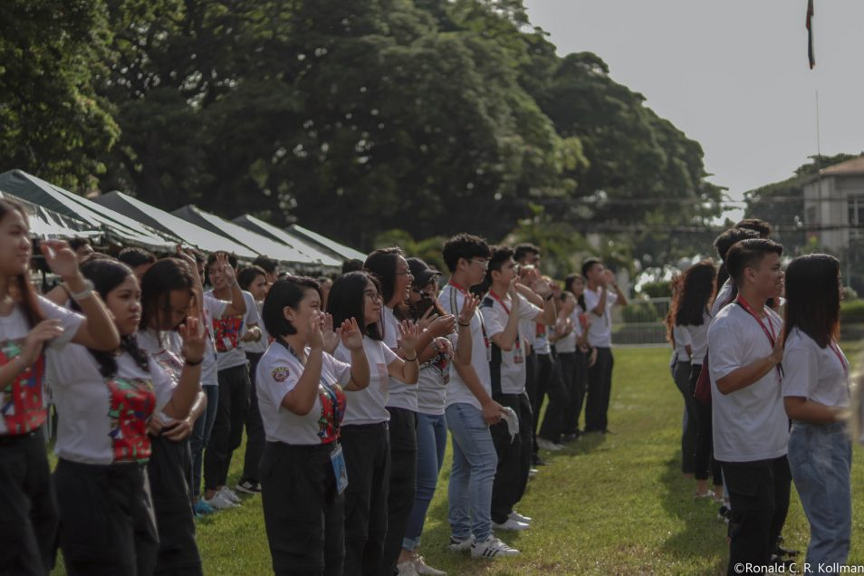

Journal Entries
GE10A
On August 16, 2024, I participated in HUGOP, an event organized by RTPM-DSHS from 1 to 5 PM. This fundraiser aimed to collect donations, either money or supplies, to help people in need, like barangays or individuals facing challenges. I participated in the activities and supported the event’s purpose. It was a simple but meaningful event that brought many people together.
This event showed me how small efforts can make a big difference when people work together. Even though I was just a participant, I felt proud to be part of something that could help others. What stood out the most was how hard the organizers worked to make the event successful, and it inspired me to want to do more. The best part was seeing so many people together for a good cause, even if my role wasn’t huge.
This experience made me realize how crucial it is to support initiatives like fundraisers. I hope to help more the next time, perhaps by volunteering or enlisting others. If I could do it over, I would bring my friends along so we could all pitch in and have an even more significant effect.
Because of this activity, I am motivated to participate in more opportunities like this in the future and have a greater appreciation for the importance of giving. Seeing the generosity and love people can display has made me feel more a part of my community. I was reminded by this event that small gestures can have a big influence.
On September 1, 2024, I participated in a clean-up drive at RTPM-DSHS. The program lasted from 7:30 to 10 a.m. and included many students and teachers working together to clean up various areas on campus. My task was picking up trash and sorting recyclables, so I was an essential part of the effort. The purpose was to clean the environment while creating community awareness about good waste management practices.
I initially assumed the activity would be as easy as picking up trash, but I learned much more about responsibility and teamwork. Collaborating with like-minded individuals motivated me and demonstrated the power of group efforts to bring about significant change. Seeing how much trash people leave behind and understanding that even simple changes, such as refusing to litter in inappropriate places, has a significant impact, was the most unexpected aspect. The long hours and heat were difficult for me, but the thrill of seeing the campus immaculate at the end made it all worthwhile. This was a really eye-opening event that has motivated me to keep changing the world.
My perspective on protecting the environment has broadened as a result of this event. Reducing waste and recycling are two examples of how I've become more conscious of my behavior and want to inspire others to follow suit. To engage more people, I intend to participate in more environmental actions going forward and even assist in planning similar cleanups. To help the process go more smoothly and effectively, if I were to take part again, I would be more prepared by packing extra supplies like garbage bags and reusable gloves.
Because of this activity, I am more conscious of how my actions impact the environment. I feel equipped to contribute in little but significant ways to environmental protection. This activity also reminded me that group efforts may spur change, and I want to contribute to that change going forward.
On September 16, 2024, I joined Project Painit, an activity organized by DOST from 2 to 5 PM. This event aimed to help people affected by Typhoon Enteng by giving them money, supplies, and other basic needs. My job was to assist with small tasks like arranging items and helping with distribution. It was all about showing care and helping those who were struggling after the typhoon.
Thanks to this activity, I gained a better understanding of the significance of helping those in need. It was extremely touching to see the beneficiaries' joy upon receiving the donations. Despite my minor contribution, I felt that I was a part of something that had a significant impact. Seeing how much support these people needed was the most challenging aspect, but it also inspired me to give more.
I was inspired to participate in additional initiatives of this sort and help people in any way I could by this effort. I would also like to urge others to lend a hand whenever they can, no matter how small. If I were to rejoin, I would try to help more with planning or gathering funds to increase my contribution.
Because of this activity, I am more motivated to help those in need and thankful for opportunities to make a difference. I feel more grateful for what I have and more aware of how I can share it with others. This experience also reminded me that even small efforts can bring hope to people.
On September 29, 2024, I joined Project Padagat, a coastal clean-up drive organized by Silliman University students under DOST, from 5:30 to 8:00 AM. The goal was to clean the shore and help protect the environment. My role was to pick up trash along the beach, divide the group into sub-groups to make the job efficient, and help sort it for proper disposal. It was a simple activity, but it felt meaningful because we were helping the environment.
This clean-up drive made me realize how bad pollution is and how much it affects the ocean. It was surprising to see how much trash there was and how most of it could have been avoided if people were more responsible. The best part was seeing how much cleaner the shore looked after we worked together. It made me feel like I was doing something good for the planet.
This experience taught me how important it is to take care of the environment. I want to join more clean-up drives and encourage others to help out. Next time, I’d bring more tools, like gloves or bags, to make the work easier and faster for everyone.
Because of this activity, I am more aware of how my actions affect the environment and more determined to do my part to protect it. I feel proud to have contributed to this effort and motivated to make small, everyday changes to reduce waste. This activity reminded me that working together can make a big difference in keeping our planet clean.